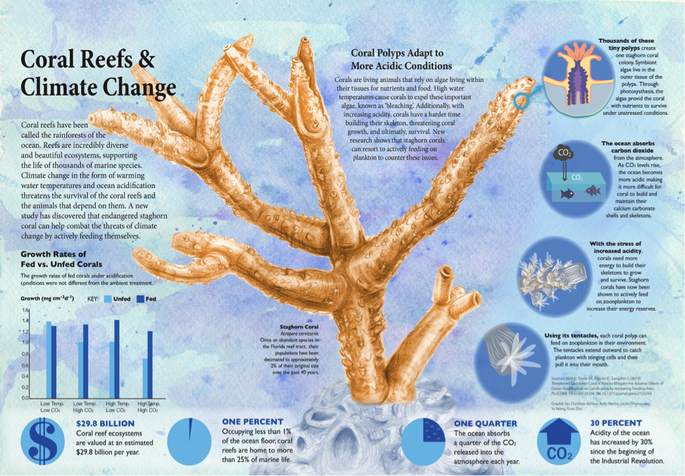
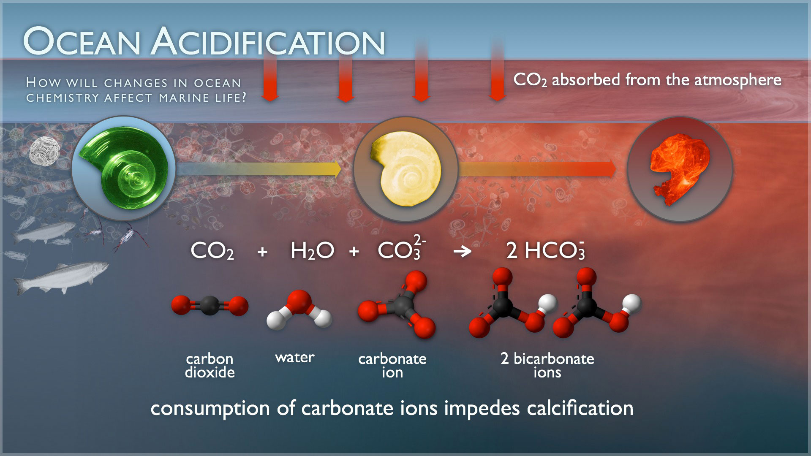
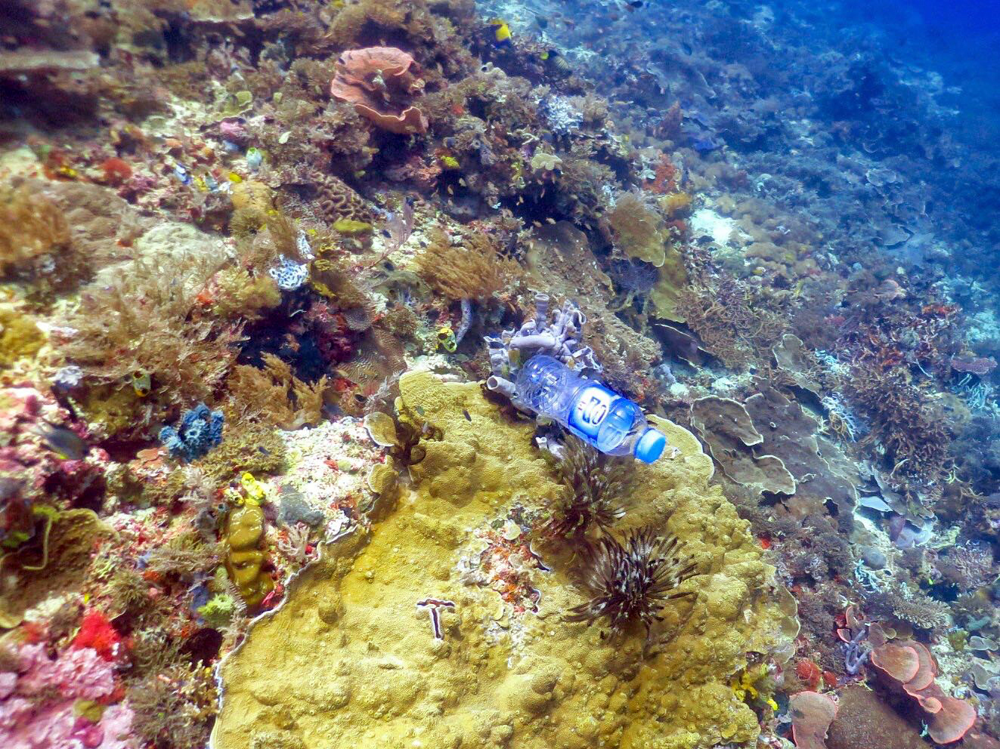

Causes of Coral Reef Degradation
The major causes of coral reef degradation include:
- Climate change and global warming, which increase sea temperatures and cause coral bleaching.
- Pollution from agricultural runoff, chemicals, plastics, and sewage.
- Overfishing and destructive fishing methods such as dynamite fishing.
- Coastal development and increased sedimentation.
1. Climate Change
Credit: Infographic created by students of the Applied Visual Science Lab, Christine deSylva, Kelly Martin, Leslie Thompson, Ye Wang, and Yiran Zhu.
Climate change is causing a significant increase in sea temperatures, leading to coral bleaching. During bleaching events, corals expel the symbiotic algae called zooxanthellae, which provide food through photosynthesis. Without these algae, corals lose their color and energy source, making them more vulnerable to diseases and death (Hughes et al., 2017). Additionally, extreme weather events, such as storms and hurricanes, can inflict physical damage on coral reefs, breaking apart structures and reducing their ability to recover.
For more information on how coral reefs are affected by climate change, visit Coral Struggle to Survive.
2. Ocean Acidification
Credit: NOAA
The absorption of excess atmospheric CO2 by the oceans leads to a decrease in pH levels, a process known as ocean acidification. This reduces the availability of carbonate ions essential for corals to build their calcium carbonate skeletons. As a result, coral growth rates decline, and existing structures become more fragile (Hein et al., 2020).
Understanding Ocean Acidification
Ocean acidification refers to the ongoing decrease in the pH levels of Earth's oceans, primarily due to the absorption of excess carbon dioxide (CO2) from the atmosphere. Since the start of the industrial revolution, the average pH of surface ocean waters has fallen from about 8.2 to approximately 8.1, which corresponds to an increase in acidity of about 30%. This change in ocean chemistry has significant implications for marine life, particularly for organisms that build shells and skeletons from calcium carbonate, such as corals, mollusks, and some plankton species.
Causes of Ocean Acidification
- Increased CO2 Emissions: Human activities such as burning fossil fuels and deforestation lead to higher levels of CO2 in the atmosphere, a significant portion of which is absorbed by the oceans.
- Chemical Reactions: When CO2 dissolves in seawater, it forms carbonic acid, which then dissociates to release hydrogen ions, lowering pH levels and increasing acidity.
Impacts on Marine Life
- Calcifying Organisms: Shellfish, corals, and other marine organisms that rely on calcium carbonate face difficulties in building and maintaining their shells and skeletons.
- Disruption of Food Webs: Altered behavior and survival rates of species like clownfish affect predator-prey dynamics, potentially destabilizing entire marine food webs.
For more detailed information, visit the NOAA's resource collection on Ocean Acidification.
3. Pollution
A plastic bottle wedged in a coral reef. Dr. Kathryn Berry
Agricultural runoff introduces high levels of nutrients into coastal waters, promoting algal growth that can smother corals (Fabricius, 2005). Additionally, industrial discharges and sewage introduce harmful chemicals and heavy metals, which can be toxic to corals and other marine life (Fabricius, 2005).
The Alarming Impact of Plastic Pollution
Recent studies reveal that the pollution of our oceans, particularly from plastics, poses a grave threat to coral reefs, essential ecosystems that support marine biodiversity and provide livelihoods for millions. A significant research effort surveyed nearly 125,000 coral reefs across the Asia-Pacific region and identified 11.1 billion pieces of plastic debris entangled in corals. This plastic not only physically damages the corals but also heightens their susceptibility to deadly diseases by up to 89 percent.
Researchers discovered various types of plastic waste, including bottles, bags, and fishing gear, wreaking havoc on the reefs. Microplastics also contribute to this crisis, as they are consumed by marine life, leading to harmful bioaccumulation in the food chain (NOAA, 2017). For additional information, refer to the Smithsonian's findings.